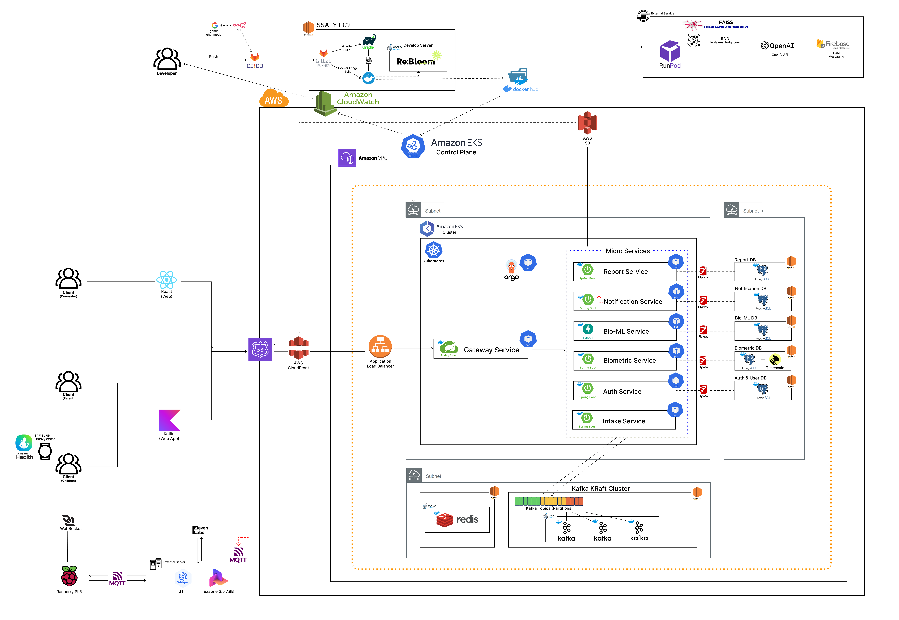
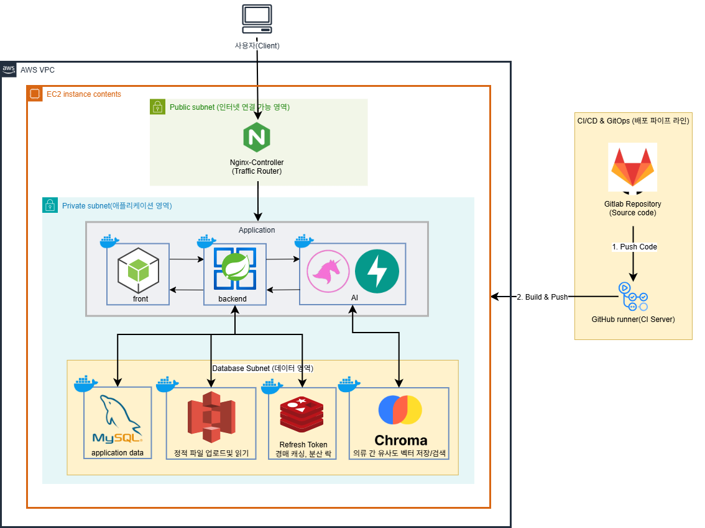
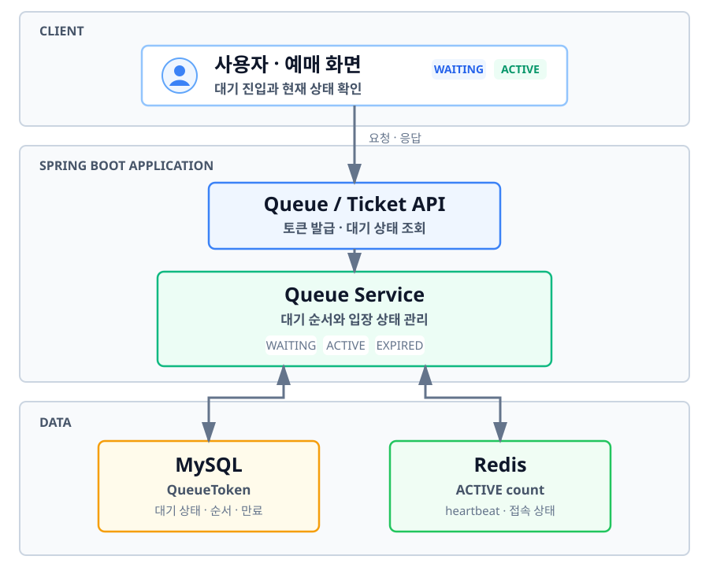
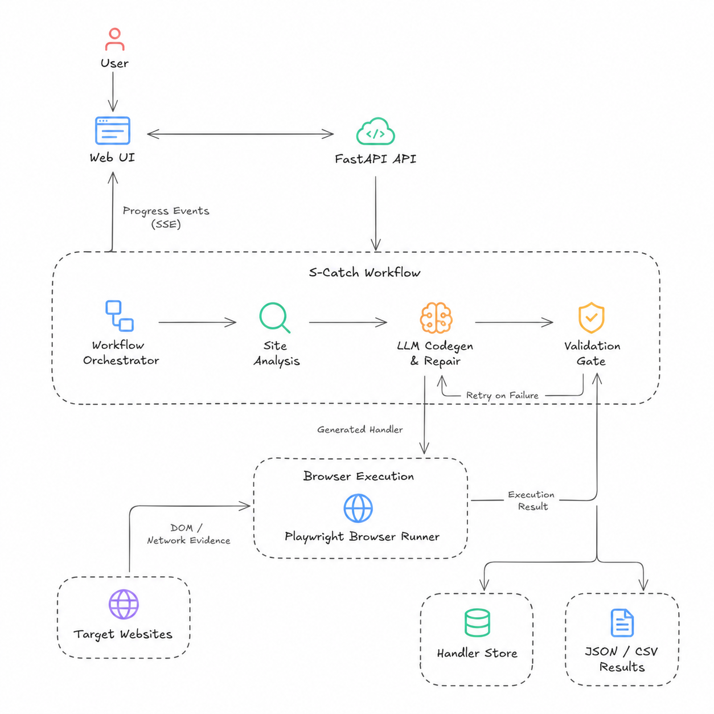

Spring Boot REST API·비즈니스 로직 구현, Spring Security 인증·인가 적용, JPA 엔티티·조회 로직 작성
Dockerfile·Docker Compose 작성, Kubernetes Deployment·Service·Ingress 구성, ArgoCD 배포 상태 관리
PostgreSQL·MySQL 테이블·조회 쿼리 작성, Redis Sorted Set·TTL·Lua Script 기반 대기열 구현
총 4개의 프로젝트 상세 내역

7개 서비스의 Kubernetes 리소스와 ALB Ingress·HTTPS, ArgoCD를 구성하고 report-service에 PostgreSQL JDBC 기반 ShedLock을 적용했습니다.
로그에서 SQLState 53300을 확인했습니다. 배포 설정을 계산하니 max_connections=40인 검증용 RDS에서 Pod당 최대 20개, 총 60개 연결을 열 수 있는 구조였습니다.
Pod별 커넥션 풀이 합산되어 설정상 최대 60개가 되었고, DB 한도를 넘어 새 Pod가 기동하지 못했습니다.
DB 사양을 높이기보다 서비스 규모에 맞춰 연결 예산부터 조정했습니다. 풀을 20개에서 8개로 낮추고 기존 Pod를 축소해 연결을 반환한 뒤 재배포했습니다.
설정상 최대 연결 수
실제 JDBC 세션 24개
Ready 2/3 → 3/3
365,000건의 합성 데이터를 적재하고 EXPLAIN ANALYZE를 실행해 Parallel Seq Scan과 DB 쿼리 p95 41.292ms를 확인했습니다.
children_id와 report_date를 함께 사용하는 조회 조건을 직접 지원하는 인덱스가 없었습니다.
자녀 ID의 동등 조건과 날짜 범위 조건에 맞춰 복합 인덱스를 설계하고, 동일 스키마를 재현할 수 있도록 Flyway로 반영했습니다.
DB 쿼리 p95 99.3% 감소
Bitmap Index Scan 전환

Backend·Frontend·AI 실행 환경을 Docker로 통일하고, GitLab CI/CD와 Nginx Blue/Green 구조로 빌드 검증부터 배포 전환까지 자동화했습니다.
동일 조건 재빌드에 37.4초가 걸렸고, 모노레포의 변경 영역과 무관한 작업까지 실행되어 피드백이 늦어졌습니다.
Gradle 의존성 캐시가 재사용되지 않았고 Backend·Frontend·AI의 변경 범위를 구분하지 않았습니다.
소스보다 변경 빈도가 낮은 Gradle 의존성은 캐시로 재사용하고, rules:changes로 변경된 영역의 Job만 실행하도록 분리했습니다.
동일 조건 Gradle 재빌드
90.6% 단축
단일 서버의 Docker·Nginx 구조를 유지하면서 배포 시점의 트래픽 전환 범위를 작게 만드는 방법이 필요했습니다.
기존 컨테이너를 먼저 종료하면 새 컨테이너의 기동 시간 동안 요청을 처리할 대상이 사라집니다.
기존 Nginx를 그대로 활용할 수 있는 Blue/Green 방식을 선택해 새 컨테이너를 먼저 기동하고 upstream 전환 후 이전 컨테이너를 종료하도록 자동화했습니다.
새 컨테이너 기동
Nginx upstream 전환
이전 컨테이너 종료

기존 서비스는 MySQL의 QueueToken으로 대기 상태와 순서를 관리하고, Redis에는 ACTIVE 사용자 수와 heartbeat를 저장했습니다. 후속 Redis 개선과 검증은 다음 페이지에 분리했습니다.
토큰은 사용자를 식별하지만 요청 순서를 나타내지 않고, 시간값은 같은 시각에 들어온 요청의 서버 수신 순서를 구분하기 어렵다고 판단했습니다.
기존 구조에는 동시 요청의 접수 순서를 구분할 고유 순번이 없었습니다. 순번 발급·대기열 저장·상태 저장을 개별 명령으로 처리하면 일부만 반영될 위험도 있었습니다.
INCR로 모든 서버가 공유하는 증가 순번을 만들고, 순위 조회와 이탈 제거가 가능한 Sorted Set에 저장했습니다. 세 명령은 Lua로 묶어 원자 처리했습니다.
순번 중복·누락 0건
저장 순서 100,000/100,000 일치
별도 비교 실험: 처리량 6.86% 증가
브라우저 종료 시 취소 요청 전달을 보장할 수 없으므로, Heartbeat가 끊긴 뒤 서버가 슬롯을 회수해 다음 사용자를 입장시키는 시간을 검증 항목으로 정했습니다.
정상 취소는 즉시 처리되지만 연결 종료는 클라이언트의 취소 요청을 보장할 수 없어 서버가 이탈 여부를 판단해야 했습니다.
서버가 마지막 응답 시각을 기준으로 회수하도록 Heartbeat와 connection lease를 두고 scheduler가 만료 슬롯을 정리하게 했습니다.
ACTIVE 100명 통신 중단 후
101번 사용자 ACTIVE 전환

제한된 미팅에서 요구사항을 확인하기 위해 데모를 제안·구현했습니다. 요구사항 구체화와 오류 재시도, FastAPI 엔드포인트는 팀원과 공동 개발했습니다.
수집 항목·결과물·실패 조건을 함께 정리한 뒤, 제한된 미팅에서 상대가 직접 확인하고 의견을 줄 수 있는 형태가 필요하다고 판단했습니다.
질문을 여러 차례 주고받기 어려워 한 번의 미팅에서 해석 차이를 최대한 드러내야 했습니다.
미팅용 데모를 먼저 제안하고 화면과 기능을 구현해, 제가 맡은 수집·검증 흐름을 직접 시연하고 현업 의견을 구현 방향에 반영했습니다.
기업 연계 프로젝트 최종 우수상
고정된 수집 규칙만으로는 변경 대응이 어려웠고, LLM 생성 코드를 그대로 채택하면 실행에 성공해도 잘못 수집된 값을 놓칠 수 있어 생성과 검증을 분리했습니다.
동적 화면을 실제 브라우저처럼 조작하고 DOM과 네트워크 응답을 함께 확인하기 위해 Playwright를 사용했습니다.
추출 정보를 OpenAI API에 전달해 페이지별 코드를 생성·실행하고, 실행 오류와 비교 결과를 팀원과 공동 구현한 재시도 흐름에 전달했습니다.
브라우저 접근·DOM 추출·API 호출·생성 코드 실행·기준 데이터 비교를 담당했습니다. 오류 재시도와 FastAPI 엔드포인트는 공동 구현했습니다.
로그와 지표로 문제를 확인하고, 검증 가능한 구조로 개선하는 개발자 안도형이었습니다.